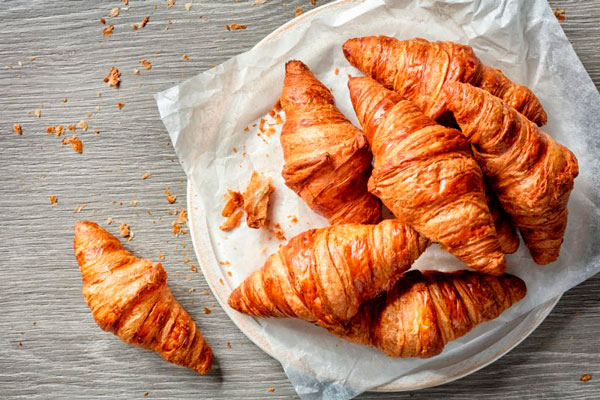

Воздушный круассан по традиционным французским рецептам на натуральном сливочном масле
Нежный пропитанный морковный торт с добавлением грецких орехов, ананаса, изюма, а также ароматных специй - корицы и мускатного ореха, со сливочным кремом на основе белого шоколада.